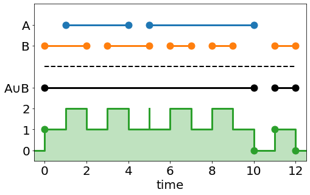
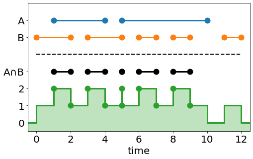
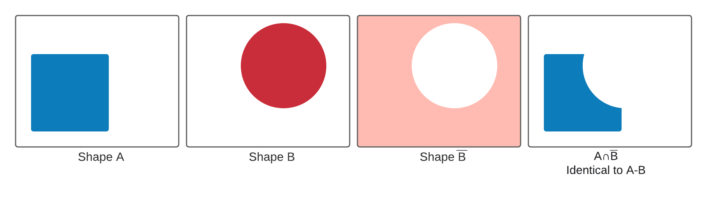
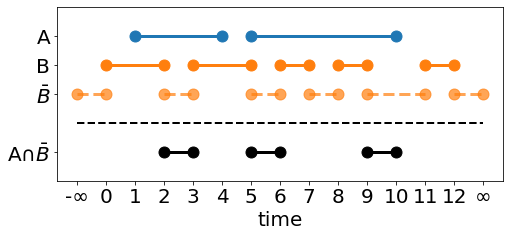

Rendering Constructive Solid Geometry With Python
I recently hit a road block with my ray tracer: cubes, cylinders, and spheres rendered fine, but there wasn't an easy way to create arbitrary shapes whose intersection and normal functions I hadn't already hard coded. Since PyRayT's end use is for optical design, at the bare minimum it needed a flexible way to create lenses and mirrors. Flipping through Jamis Bucks' The Ray Tracer Challenge, it turns out the last chapter Constructive Solid Geometry (CSG) addressed my needs perfectly! However, Buck's equations for CSG did not blend well with PyRayTs flow of rendering multiple rays at once. Today I'll be covering my own algorithm for adding constructive solid geometry to a ray tracer, as well as its implementation in Python using NumPy.
Contents
CSG In a Nutshell
An easy way to create complex surfaces from basic shapes, constructive solid geometry is based around three fundamental operations: union, intersect, and difference. Each operation acts on two shapes, resulting in a new shape that is a combination of the two. Multiple CSG operations can be chained together, creating increasingly intricate shapes while using significantly less surfaces than an equivalent triangular mesh.
The three base operations for Constructive Solid Geometry. Union (∪) combines both shapes, intersection (∩) returns only the common volume of both spaces, and difference (-) subtracts the second shape from the first.
What It Means for Ray Tracing
Ray tracing with CSG's is surprisingly straightforward. When a ray is interesected with a CSG object, it is really intersected with the set of surfaces that make up the object. The job of the CSG algorithm is to take those two sets of intersections and filter them out so that only valid ones remain. These hits are then returned to the renderer so it can determine the closest surface that the ray interacts with.
An example of rendering the union of two surfaces. While each sub-shape returns a full set of intersections, the filter function discards points a1 and b0 since they are inside of the new object.
Writing a function to sort valid CSG hits turns out to be nontrivial. For every ray-surface hit, the function needs to determine if the hit occurred inside the opposite surface. This is easy enough for convex surfaces that have at most two intersections per ray, but as the number of intersections grows, basic methods for filtering fall apart or slow down significantly.
Complex hit arrays for two surfaces A & B, and the expected hit arrays for CSG Operations on those surfaces
Writing a Function to Filter Hits
Every method I found to filter out csg intersections involved iterating over all hits in a set, and internally keeping track of two booleans that determine if the ray is inside of each surface at a given hit. By contrast, this approach operates on the entire array at once, but leverages a few assumptions about the surfaces being intersected:
- Both surfaces are closed surfaces
-
"A closed surface is a surface that is compact and without boundary." While this definition is accurate, it's not exactly intuitive to imagine what surfaces are closed and which are open. I visualize closed surfaces as "if I were to look at this surface from any angle, can I tell if it's hollow without cutting it open". If the answer is no, it's closed, otherwise it's an open surface with a boundary.
By asserting that all surfaces are closed surfaces, you can also claim that each hit array has an even number of elements. Since rays extend from time \(t=-\infty\) to \(t=\infty\), any ray that enters a surface must exit the surface. Even if the surface has infinite volume, the ray will then enter and exit at \(\mp\infty\).
Additionally, CSG becomes meaningless if the surfaces are not closed. Imagine subtracting an infinitely thin plane from a sphere. Since planes have no depth you don't remove any material from the sphere, and end with the same shape you started with!
- The hit arrays are sorted
-
We'll use the position of intersections in their respective arrays to determine if the ray is entering or exiting the surface. In order for it to work, both input arrays must be sorted.
- Odd indexed hits enter the surface, even valued hits leave the surface
-
Since the intersection arrays are sorted, and include all hits from \(-\infty\) to \(\infty\), the first element each hit array must be the ray entering the respective surface. Additionally, it's impossible for the ray to enter the surface again without first leaving it, so the next hit represents the ray exiting the surface. This alternating pattern continues for the entire hit array.
The surface_count Vector
There are two additional arrays we'll use validate hits: (1) a sorted array of all hits for both surfaces, and (2) an array that tracks how many surfaces the ray is inside of at each hit, called surface_count.
The same intersection arrays from above and the corresponding surface_count array
To create surface_count we'll do the following:
Create a concatenated array of both hit arrays (but do not sort it yet).
Take the argsort of the concatenated array.
Create a new array with the same dimension as the concatenated array. For each index in the new array, assign +1 if the value in the equivalent argsort index is even, and -1 if is odd.
Take the cumulative sum of the +/-1 array, this is the surface count array.
Sort the concatenated hit array.
The +/-1 array is used to indicate if a hit is entering or exiting one of the two surfaces. Since both arrays have an even number of elements, every odd value of the concatenated array must enter a surface, and every even hit must exit. NumPy's where, combined with argsort and cumsum are all we need to create surface_count. Once we have that we're ready to tackle the first of our Boolean operators.
merged_array = np.concatenate((array1, array2)) merged_argsort = np.argsort(merged_array, axis=0) merged_array = merged_array[merged_argsort] merged_mask = np.where(merged_argsort & 1, -1, 1) surface_count = np.cumsum(merged_mask, axis=0)
Union
Take a look at the union operator and corresponding count values. Notice that union hits are any any index (n) where count[n-1]==0 and count[n]==1, or count[n-1]==1 and count[n]==0. This is the same as taking the exclusive or (XOR) of the array with a copy of itself shifted down by one row. From above we know that the last value of the count array has to be 0 (at \(t=\infty\) the ray must have exited all surfaces), so the zeroth row of the shifted array will always be all zeros. NumPy gives us all the function calls needed to efficiently perform xor on our count array, shown below.
surface_count = np.logical_xor(surface_count, np.roll(surface_count,1,axis=0)) csg_hits = np.where(surface_count != 0, merged_array, np.inf)
A couple things from this code might pop out: (1) why specify the axis when rolling a 1D array, and (2) why does csg_hits need the same dimension as hit_array, padded with np.inf, and not just return the valid hits. Both of these are addressed in Extending To 2D Matrices.
Intersection
The intersection operator can be handled in a similar manner. Looking at the count array, an intersection hit occurs at any index (n) where count[n] == 2 or count[n-1] == 2. This time we'll use NumPy's logical_or function to create the mask.
is_two = (surface_count == 2) mask = np.logical_or(is_two, np.roll(is_two, 1, axis=0)) csg_hits = np.where(mask, merged_array, np.inf)
The intersection operator has an interesting "blip" at t=5. This is because the ray intersects both surfaces at that time, but enters the first while exiting the second. Using integer math this becomes a 'zero thickness' shell, but it can cause unintended results when the hits are floating points and the surfaces overlap by a small amount.
Difference
The difference operator is unique from the union and intersection operator. Both union and intersection have analogs in boolean algebra, (or the binary equivalent and and or operators). Boolean algebra, however, does not have the concept of subtraction. Not only that, but we can't use the clever tricks from the count array, since we need to know which surface is the subtracting surface, and the count array only tracks how many closed surfaces the ray is inside. Rather than creating an entirely new method just for differences, we're going to redefine what a difference means so it it behaves like a boolean operation.
Don't think of A-B as shape B cutting away from shape A, think of it as the intersection of A with the infinitely large volume of space where B does not exist, called \(\bar{B}\).
Defining the function in this way lets us reuse the the same principle as the intersection operator, but first the count array has to be redefined for an inverted shape. An inverted shape still has to follow the assumptions from above, but the ray enters the shape at \(-\infty\) and exits the shape at the first hit in the hit array. Similarly, the ray enters the shape at the last hit of the hit array, and exits at \(\infty\).
Padding the intersection array with \(+/-\infty\) is unnecessary (and NumPy arrays don't like to be resized). Instead, the following observations allow us to work with the unmodified array.
The hit at \(-\infty\) will always be the first hit in the sorted hits array, meaning the first value in the cumulative sum will always be a 1. This is the same as adding 1 to the count array and ignoring the hit at \(-\infty\).
The hit at \(+\infty\) will always be the last hit in the sorted hits array. If we ignore it, the cumulative sum's final value will be 1 (since the ray is still inside of the inverted surface). However, looking at the Intersection operator, we only care about finding indices where count[n]==2, so we're safe to ignore it.
The pre-summed count array needs to be filled with +/-1 from 0:n, where n is the length of the first hit array, and -/+1 from n:-1. This will successfully "invert" the second shape, where hits that used to enter the surface now exit, and visa versa.
With those observations in hand we're ready to create the count array for the difference operator, and once again NumPy's logical_xor will simplify the task.
merged_array = np.hstack((left_array, right_array)) merged_argsort = np.argsort(merged_array,axis=0) count_array = np.where(np.logical_xor(merged_argsort&1, merged_argsort>=left_array.shape[-1])) count_array = np.cumsum(count_array)+1
Here the xor operator is inverting the array mask for any indices in the argsort that reference the right_array.
Extending To 2D Matrices
PyRayT can perform reasonably fast ray tracing because under the hood every ray is stored in a 2x4xn matrix that gets intersected with each surface. This allows me to bypass Python for loops in favor of heavily optimized NumPy functions. Fortunately, by specifying axes and preserving array sizes, the csg function can be readily extended to 2D matrices, where every column represents the ordered hits for an individual ray with the given surface.
The only thing we need to change is how the arrays are concatenated. If a 1D array is passed, they can be concatenated along the zero axis, but 2D arrays need to be stacked column-wise.
if array1.ndim == 1: # if 1D arrays were passed, concatenate merged_array = np.concatenate((array1, array2)) merged_argsort = np.argsort(merged_array, axis=0) merged_array = merged_array[merged_argsort] else: # otherwise stack them where each column represents a unique ray's hits merged_array = np.vstack((array1, array2)) merged_argsort = np.argsort(merged_array, axis=0) merged_array = merged_array[merged_argsort, np.arange(merged_array.shape[-1])]
The Full Function
The complete function is shown below. There's an additional helper class Operation that inherits from Enum used to select which CSG operation is performed (I prefer Enums over string arguments for anything end users won't see). There's an additional argument sort_output that sets if the returned array is sorted along the hit axis. The reason for this option is to eliminate unnecessary np.sort() calls on large arrays that slow down the final program.
import numpy as np from enum import Enum class Operation(Enum): UNION = 1 INTERSECT = 2 DIFFERENCE = 3 def array_csg(array1: np.ndarray, array2: np.ndarray, operation: Operation, sort_output=True): """ Given two arrays and an operation, returns a new array which is the CSG operation acting on the array. If the array is thought of as intersection points between a ray and a two objects being combined with a CSG operation, the returned is the valid hits for the resulting object. Function assumes both arrays are sorted and have an even number of axis=0 elements :param array1: :param array2: :param operation: :return: """ if array1.ndim == 1: # if 1D arrays were passed, concatenate merged_array = np.concatenate((array1, array2)) merged_argsort = np.argsort(merged_array, axis=0) merged_array = merged_array[merged_argsort] else: # otherwise stack them where each column represents a unique ray's hits merged_array = np.vstack((array1, array2)) merged_argsort = np.argsort(merged_array, axis=0) merged_array = merged_array[merged_argsort, np.arange(merged_array.shape[-1])] if operation == Operation.UNION or operation == Operation.INTERSECT: merged_mask = np.where(merged_argsort & 1, -1, 1) surface_count = np.cumsum(merged_mask, axis=0) elif operation == Operation.DIFFERENCE: merged_mask = np.where(np.logical_xor(merged_argsort & 1, merged_argsort >= array1.shape[0]), -1, 1) surface_count = np.cumsum(merged_mask, axis=0) + 1 else: raise ValueError(f"operation {operation} is invalid") if operation == Operation.UNION: surface_count = np.logical_xor(surface_count, np.roll(surface_count,1,axis=0)) csg_hits = np.where(surface_count != 0, merged_array, np.inf) elif operation == Operation.INTERSECT or operation == Operation.DIFFERENCE: is_two = (surface_count == 2) mask = np.logical_or(is_two, np.roll(is_two, 1, axis=0)) csg_hits = np.where(mask, merged_array, np.inf) return np.sort(csg_hits, axis=0) if sort_output else csg_hits
Verifying Test Cases
Before passing this function off as complete, we need to make sure it passes some basic unit tests. I'll be using Python's UnitTest framework to verify that the two hit arrays plotted above return the correct values for union, intersection, and difference.
import unittest import numpy as np import csg class TestArrayCSGOperation(unittest.TestCase): def setUp(self) -> None: self.array1 = np.array((1, 4, 5, 10)) self.array2 = np.array((0, 2, 3, 5, 6, 7, 8, 9, 11, 12)) self.expected = np.full(self.array1.shape[0] + self.array2.shape[0], np.inf) def test_add_operation(self): unioned = csg.array_csg(self.array1, self.array2, csg.Operation.UNION) self.expected[:4] = (0, 10, 11, 12) self.assertTrue(np.allclose(unioned, self.expected), f"expected {self.expected} but got {unioned}") def test_intersection_operation(self): intersected = csg.array_csg(self.array1, self.array2, csg.Operation.INTERSECT) self.expected[:10] = (1, 2, 3, 4, 5, 5, 6, 7, 8, 9) self.assertTrue(np.allclose(intersected, self.expected), f"expected {self.expected} but got {intersected}") def test_diff_operation(self): diffed = csg.array_csg(self.array1, self.array2, csg.Operation.DIFFERENCE) self.expected[:8] = (2, 3, 5, 6, 7, 8, 9, 10) self.assertTrue(np.allclose(diffed, self.expected), f"expected {self.expected} but got {diffed}") if __name__ == '__main__': unittest.main()
With those tests passing, we're one step closer to a fully fledged Python ray tracer!
Constructive Solid Geometry can extend the functionality of a ray tracer by building complex shapes from basic primitives, but rendering them requires an additional step to filter out which intersections are valid. Thanks to NumPy, it's easy to write this function without reverting to Python for loops, and the same function can be used to process multiple ray-surface intersections at once.
In PyRayT, all lenses are CSG intersections of two spheres (defining the focus) and a cylinder that sets the aperture. This has sped up development time and is significantly easier than writing custom functions for each optical component.

You may have noticed the shading in these CSG surfaces seems a bit off. They're rendered with what's called a Gooch shader, which is specifically designed to be non-photorealistic. In my next post I'll discuss adding Gooch shading to PyRayT, and its tradeoffs compared to other shader models.